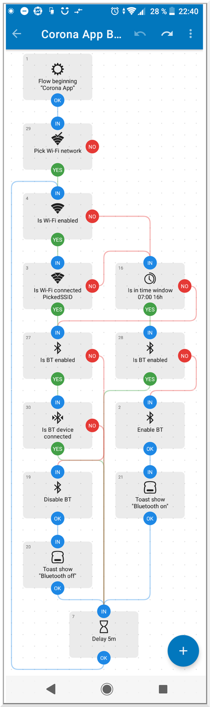

Bluetooth-Automatisierung für die Corona-App
Seit ein paar Monaten habe ich die Corona-App auf meinem Handy installiert. Aber ich bin ja ein (Daten-)Sparfuchs und deaktivierte Bluetooth am Handy, vor allem, wenn ich sowieso im Homeoffice bin. Umso mehr habe ich mich immer geärgert, wenn ich von einem Besuch auf dem Wochenmarkt nach Hause kam und festgestellt habe, dass die Corona-App wegen deaktiviertem Bluetooth nicht arbeiten konnte. Eine Lösung für dieses Problem musste her.
Für Android-Handys gibt es für automatisierbare Aufgaben die App Automate von der Firma LlamaLab. In dieser App kann man über graphische Flussdiagramme ("Flows") das Verhalten des Handys steuern, wenn bestimmte Ereignisse eintreten. Ein Flow besteht dabei aus Blöcken, in denen zum Beispiel Daten ausgelesen, Entscheidungen getroffen oder Dateien auf dem Handy erstellt werden. Ein ganz einfacher Flow ist zum Beispiel: Schieße ein Foto mit der Frontkamera, wenn die PIN falsch eingegeben wurde. Dies ist eine ziemlich einfache Aufgabe und erfordert nur 5 Blöcke in einem Flow. Allerdings benötigt die App dafür auch gewisse Rechte, zum Beispiel eben den Zugriff auf die Kamera und auf das Dateisystem zum Abspeichern der Fotos.
Letztlich kann die App fast alle Sensoren des Telefons auslesen und mit diesen bestimmte Aktionen auslösen - es existieren aktuell (November 2020) über 330 Blöcke. Die kostenlose und trotzdem werbefreie Variante der App hat nur eine einzige Einschränkung: Es können maximal 30 Blöcke in allen Flows zusammen existieren. Bezahlt man jedoch ein paar Euro für die App, so gibt es keine Grenze mehr.
Kommen wir nun also zu dem von mir erstellten Flow, in dem das Bluetooth meines Telefons automatisch an- oder ausgeschaltet werden soll. Diesen Flow kann man sich übrigens über die Community von Automate herunterladen. Folgende Anforderungen hatte ich an den Flow:
Wenn ich aus dem Haus gehe, soll Bluetooth aktiviert werden. Komme ich wieder Heim, dann soll Bluetooth wieder deaktiviert werden. Der Zustand "Ich bin zu Haus" soll über die Verfügbarkeit von unserem WLAN definiert werden: Ist WLAN am Handy aktiviert und ist unser Haus-WLAN verfügbar, so bin ich höchstwahrscheinlich zu Hause und benötige Bluetooth nicht.
Zwischen 23 und 7 Uhr soll Bluetooth deaktiviert werden denn da bin ich sehr wahrscheinlich im Bett. Das heißt, nur zwischen 7 und 23 Uhr soll Bluetooth aktiviert werden, aber auch nur, wenn ich nicht zu Hause bin (siehe oben).
Bin ich zu Hause und mein Handy ist gerade mit einem Bluetooth-Gerät verbunden (z.B. mit Kopfhörern), so soll Bluetooth nicht deaktiviert werden.
Ohne viel Umschweife folgt hier die graphische Darstellung des Flows, den ich mit Automate erstellt habe:
Ganz oben geht es los mit "Pick Wifi-Network": Dieser Block zeigt beim Starten des Flows einen Auswahldialog der verfügbaren WLANs an, die gerade im Handy gefunden werden. Hier muss man sein "Haus-WLAN" auswählen. Dies ist notwendig, damit entschieden werden kann, ob man zu Hause ist oder nicht. Die Entscheidung passiert im Block mit der Nummer "3".
Natürlich soll Bluetooth immer nur dann aus- oder angeschaltet werden, wenn es vorher an oder eben aus war. Dafür sind die Abfragen in den Blöcken mit der Nummer 27 und 28 da. Wenn zur Laufzeit entschieden wird, dass Bluetooth wirklich aus- oder eben angeschaltet werden soll, so passiert das in den Blöcken 19 oder 2. Danach wird jeweils noch eine kurze Statusmeldung (eine Toastnachricht) eingeblendet. Nach fünf Minuten Wartezeit (Block 7 ganz unten) geht es wieder von vorne bei der Überprüfung der vohandenen WLANs los.
Da dieser Flow weniger als 30 Blöcke hat, kann man ihn sogar in der kostenlosen Variante von Automate verwenden. Ich habe mir die App jedoch gekauft, weil man noch viele andere interessante Dinge damit machen kann.